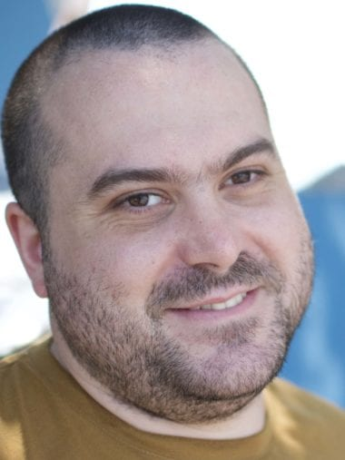
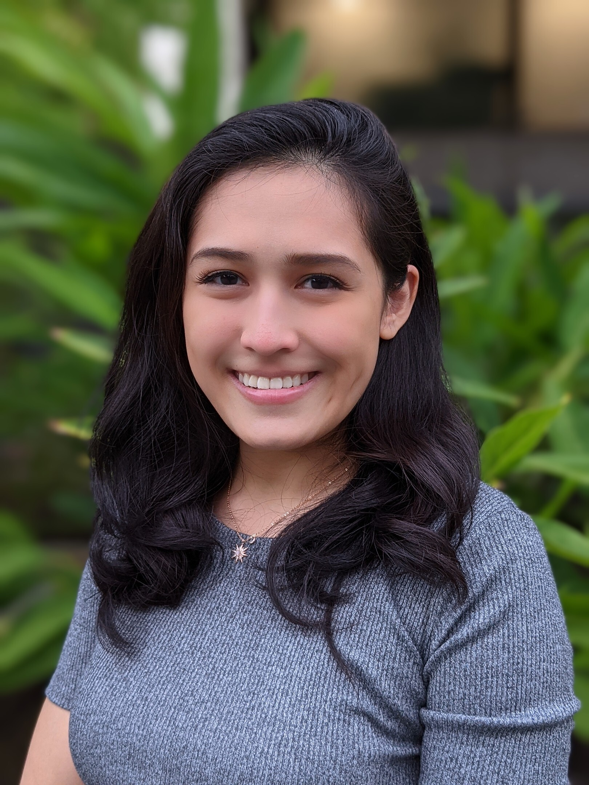
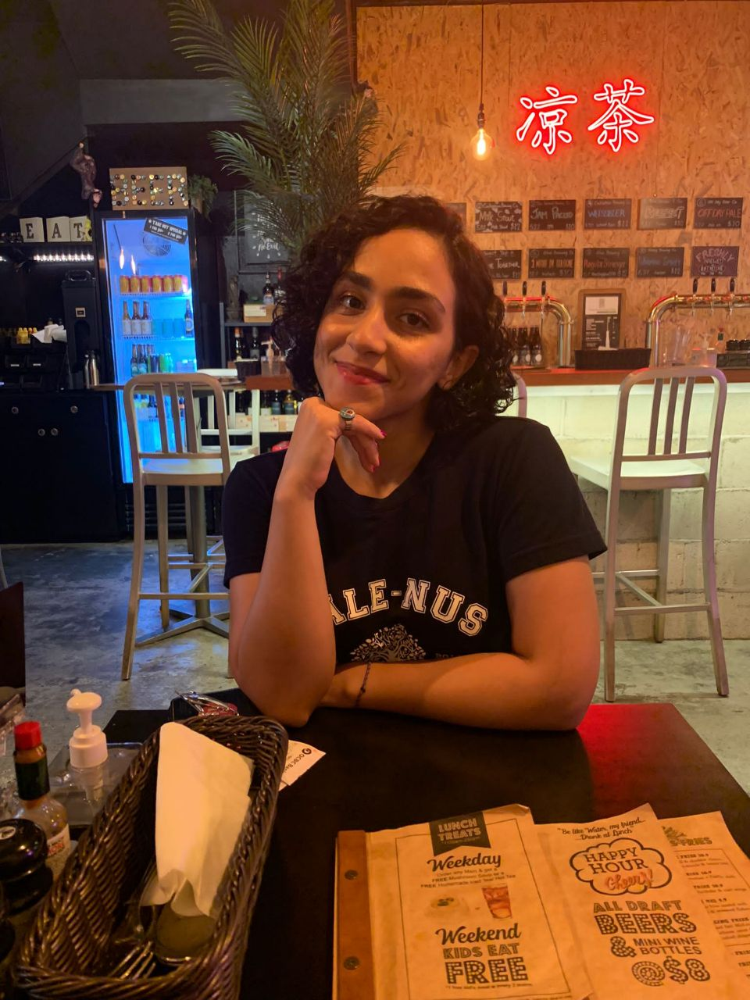

Genomics and Gene Regulation
Research
We are interested in understanding how gene expression is regulated during both development and in a disease context; specifically cancer. Our research interests encompass a variety of themes, including understanding how the 3D structure around important transcription factors influences genome evolution and identifying the genomic and epigenetic features that determine whether a gene is regulated by a specific developmental signalling pathway.
News
- October 2021: Glenda Chin joins the lab for her capstone project
- September 2021: New preprint posted: Wnt signaling rescues amyloid beta induced stem cell loss as part of a collaboration with the Tolwinski lab at Yale-NUS
- August 2021: Sara Haghani joins the lab as a Research Assistant
- July 2021: New preprint posted: A Non-Canonical Raf Function Is Required for Dorsal-Ventral Patterning During Drosophila Embryogenesis as part of a collaboration with the Tolwinski lab at Yale-NUS
Contact
E-mail: nathan.harmston (at) yale-nus.edu.sg
Publications
You can find a current and complete list of publications on Google scholar.
 Wnt signaling rescues amyloid beta induced stem cell loss
(2021)
Wnt signaling rescues amyloid beta induced stem cell loss
(2021) [preprint]
Prameet Kaur, Ellora Hui Zhen Chua, Wen Kin Lim, Nathan Harmston, Nicholas S. Tolwinski
A Non-Canonical Raf Function Is Required for Dorsal-Ventral Patterning During Drosophila Embryogenesis
(2021) [preprint]
Jay B. Lusk, Ellora Hui Zhen Chua, Prameet Kaur, Isabelle Chiao Han Sung, Wen Kin Lim, Vanessa Yuk Man Lam, Nathan Harmston, Nicholas S. Tolwinski
Team

Nathan Harmston
Principal investigatorI am a computational biologist who leads the Genomics and Gene Regulation group at Yale-NUS.
Email: nathan.harmston (at) yale-nus.edu.sg

Ellora Chua
Research AssistantEllora received her B.Sc. in Computational Biology at National University of Singapore. Currently, her work mostly focuses on bioinformatics analyses of NGS data in aging and cancer.
Email: ellora.chua@yale-nus.edu.sg

Sara Haghani
Research AssistantSara received her B.Sc. in Life Sciences at Yale-NUS College. She is currently working to identify the role of β-catenin dependent and independent genes in the biology of Wnt-addicted pancreatic cancer with RNF-43 mutations.